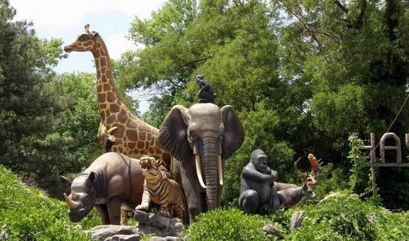
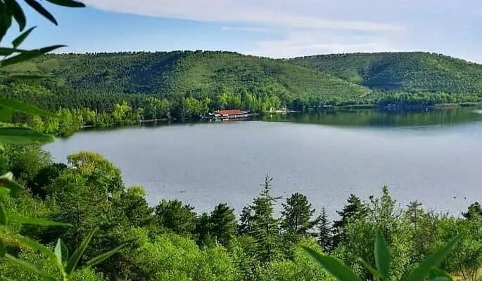
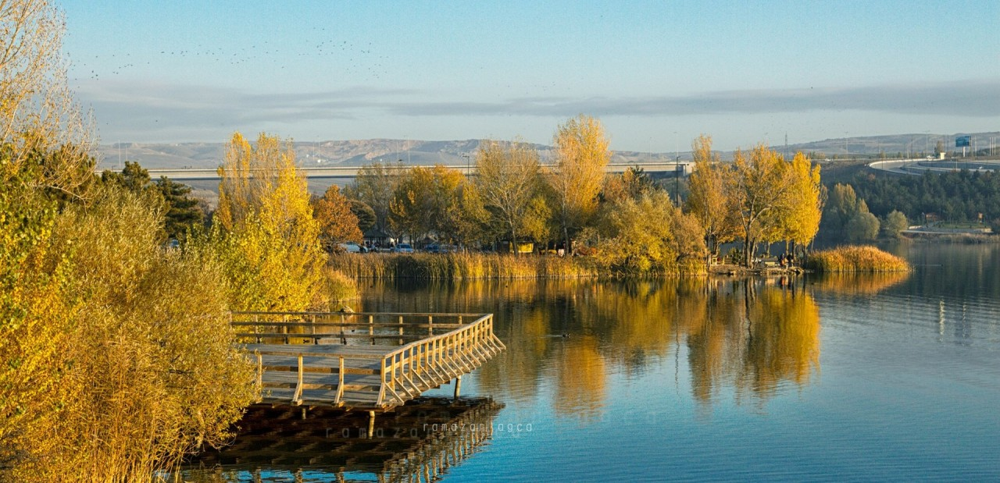
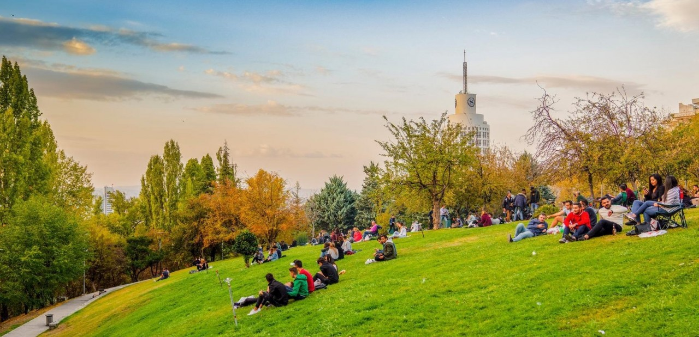

Geniş yeşil alanları, yürüyüş yolları, seraları ve hayvanat bahçesiyle doğa içinde vakit geçirebileceğiniz keyifli bir alandır.
Adres: Gazi Mahallesi, Yenimahalle/Ankara
Ziyaret Saatleri: Her gün 09:00 – 17:00
Giriş: Ücretsiz

ODTÜ arazisi içinde yer alan Eymir Gölü, bisiklet, yürüyüş ve piknik alanlarıyla doğaseverlerin uğrak noktasıdır.
Adres: Oran Mahallesi, Çankaya/Ankara
Ziyaret Saatleri: Her gün 07:00 – 22:00
Giriş: Ücretsiz (araçla giriş kontrollü)

Baraj göleti etrafındaki yeşil alanlar, mangal ve piknik yerleriyle ailelerin sıklıkla tercih ettiği bir dinlenme noktasıdır.
Adres: Şehitlik Mahallesi, Mamak/Ankara
Ziyaret Saatleri: Her gün 08:00 – 20:00
Giriş: Ücretsiz

Şehrin merkezinde, Kuğulu Park’a yakın konumda bulunan bu park, yeşillikler içinde yürüyüş ve dinlenme imkânı sunar.
Adres: Çankaya Caddesi, Çankaya/Ankara
Ziyaret Saatleri: 24 saat açık
Giriş: Ücretsiz